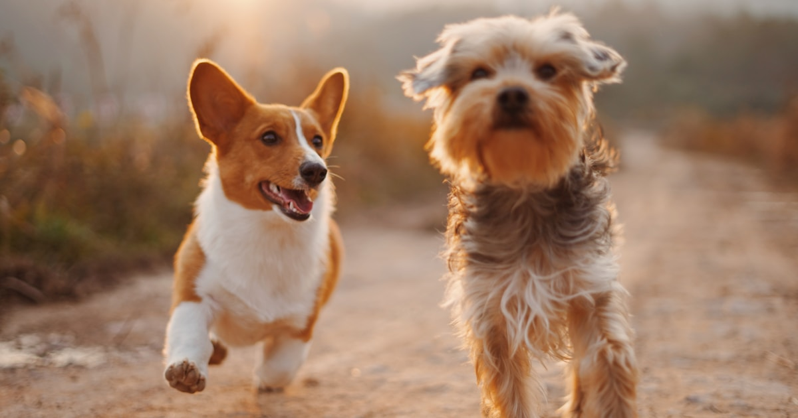

Best Dog Walking Routes in the UK for 2026

The UK is one of the best countries in the world for dog walking. From dramatic mountain passes to gentle coastal paths, ancient woodlands to wide-open moorland, there's a landscape for every dog and every owner. Whether you're after a full-day adventure or a gentle Sunday afternoon stroll, this guide covers the best dog-friendly walking routes across the country for 2026.
We've included practical details for each location - lead rules, parking, terrain, and how dog-friendly the area truly is. Because "dog-friendly" should mean more than just "dogs tolerated."
1. The Lake District, Cumbria
The Lake District is the crown jewel of English walking. With 912 square miles of fells, lakes, and valleys, it offers everything from gentle lakeside strolls to serious mountain routes. Dogs are welcome across most of the National Park, and the fell-running culture means you'll meet plenty of four-legged companions on the trails.
Top route: Catbells from Hawes End is a classic - a relatively short climb (about 4 miles round trip) with jaw-dropping views over Derwentwater. The path is well-maintained and manageable for most dogs, though the final scramble to the summit requires some confidence on rocky terrain.
- Dog-friendliness: Excellent. Dogs welcome on most fells and in many pubs and cafes
- Lead rules: Dogs must be on leads near livestock (this is the law under the Countryside Code). Lambing season (March-May) is particularly important
- Parking: Hawes End car park fills up quickly in summer. Arrive before 9am or use the Keswick Launch boat service
- Terrain: Rocky paths, some scrambling. Water bowls essential in summer
2. Peak District, Derbyshire
Straddling the border between the Midlands and the North, the Peak District is the UK's most visited National Park - and one of the most accessible for dog walkers. The White Peak offers gentle limestone dales with easy paths, while the Dark Peak provides wilder moorland and gritstone edges for more adventurous pairs.
Top route: Dovedale Stepping Stones is an iconic walk through a stunning limestone gorge. The 3-mile circular route follows the River Dove and is perfect for dogs who enjoy splashing. The stepping stones themselves can be slippery, so take care.
- Dog-friendliness: Very good. Plenty of dog-friendly tea rooms in villages like Bakewell and Castleton
- Lead rules: On leads near livestock and on open access land during bird nesting season (March-July in some areas)
- Parking: Dovedale car park (paid, operated by National Trust). Can be very busy at weekends
- Terrain: Mostly flat along the river. Muddy after rain
3. The Cotswolds, Gloucestershire/Oxfordshire
Rolling hills, honey-coloured villages, and quiet footpaths through farmland - the Cotswolds are quintessential English countryside walking. The pace is gentler here, and the scenery is the kind that makes you want to move to the countryside permanently.
Top route: The Winchcombe Circular (roughly 6 miles) takes in Sudeley Castle, Belas Knap ancient burial mound, and sweeping views across the Severn Vale. It's varied enough to keep both you and your dog interested throughout.
- Dog-friendliness: Good. Most Cotswold pubs are dog-friendly, and the walking culture is strong
- Lead rules: On leads through farmland (which is most of the Cotswolds). Sheep are everywhere
- Parking: Free parking in Winchcombe. Paid car parks at popular National Trust properties
- Terrain: Rolling hills, stiles (can be difficult for larger dogs), well-marked paths
4. New Forest, Hampshire
The New Forest is a dog walker's paradise - 219 square miles of ancient woodland, open heath, and gentle streams. The free-roaming ponies, cattle, and donkeys add a unique dimension, though they also mean leads are essential in many areas.
Top route: The Tall Trees Trail near Rhinefield is a magnificent 2.5-mile walk through towering redwoods and Douglas firs. It's flat, easy, and utterly magical. Dogs love the streams that cross the path, and the shade makes it perfect for summer walks.
- Dog-friendliness: Excellent, but with caveats - free-roaming animals mean you must be vigilant
- Lead rules: Dogs must be on leads near livestock. During ground nesting bird season (March-September), leads are required in many heathland areas
- Parking: Free Forestry England car parks throughout the forest. The Blackwater car park is a good starting point
- Terrain: Flat, sandy paths. Some areas boggy in winter. Excellent for older dogs or those with mobility issues
5. Snowdonia (Eryri), Wales
Wales' premier mountain landscape offers some of the most dramatic dog walking in Britain. While Snowdon (Yr Wyddfa) itself is crowded and challenging for dogs, the surrounding area has dozens of spectacular walks that are far more dog-friendly.
Top route: Cwm Idwal is a 3-mile circular route around a glacial lake surrounded by 3,000-foot peaks. The path is well-maintained and the scenery is absolutely breathtaking. Dogs should be on leads due to the steep drops near the lake and the presence of feral goats.
- Dog-friendliness: Good, but choose your route carefully. Some mountain paths have dangerous scrambles
- Lead rules: On leads in nature reserves (Cwm Idwal is a National Nature Reserve) and near livestock
- Parking: Ogwen Cottage car park (paid). Arrive early on weekends and bank holidays
- Terrain: Rocky, sometimes steep. Waterproof boots essential year-round
6. South Downs, Sussex/Hampshire
England's newest National Park stretches from Winchester to Eastbourne, offering chalk downland, ancient beech woods, and stunning coastal cliffs. The South Downs Way - an 100-mile national trail - is almost entirely dog-friendly and offers some of the best walking in southern England.
Top route: The Seven Sisters cliff walk from Birling Gap to Cuckmere Haven (about 4 miles one way) is one of the most photographed walks in Britain. The white chalk cliffs against the blue sea are extraordinary, and the rolling terrain is brilliant exercise for energetic dogs.
- Dog-friendliness: Very good. Brighton and Eastbourne both have dog-friendly beaches (seasonal restrictions apply)
- Lead rules: On leads near cliff edges (for your dog's safety) and through farmland. Some seasonal restrictions on beaches
- Parking: Birling Gap car park (National Trust, paid). Cuckmere Haven has a free car park that fills quickly
- Terrain: Chalk downland - steep ups and downs. Can be very exposed and windy. Cliff edges are unfenced
Discover dog walks near you
Go Rocco helps you find quieter routes, spot nearby dogs, and walk with confidence - wherever you are in the UK.
Download on the App Store7. Norfolk Broads, Norfolk
If your dog loves water, the Norfolk Broads are hard to beat. This network of rivers, lakes, and marshes offers flat, easy walking through a landscape teeming with wildlife. It's perfect for older dogs, puppies, or any dog that would rather wade through a river than climb a mountain.
Top route: The Horsey Windpump circular (about 5 miles) takes in one of Norfolk's most iconic windpumps, a beautiful stretch of the River Thurne, and Horsey Beach - where you might spot grey seals in winter. The paths are flat and well-maintained throughout.
- Dog-friendliness: Excellent. Most Broads paths are dog-friendly, and Norfolk has a strong tradition of welcoming dogs in pubs
- Lead rules: On leads near seal colonies (November-January) and through nature reserves
- Parking: National Trust car park at Horsey Windpump (free for members)
- Terrain: Flat throughout. Can be muddy and waterlogged in winter. Bring towels
8. Scottish Highlands
Scotland's right to roam means dogs (and their owners) have unparalleled access to some of the most spectacular landscapes in Europe. The Highlands offer everything from gentle glen walks to epic mountain traverses, and the relatively low population density means you can walk for hours without seeing another person.
Top route: Glen Affric, often called the most beautiful glen in Scotland, offers a 10-mile circuit through ancient Caledonian pine forest beside a series of stunning lochs. It's relatively flat for the Highlands and suitable for fit dogs of all sizes.
- Dog-friendliness: Outstanding. Scotland's access rights make it the most dog-friendly country in the UK
- Lead rules: Scottish Outdoor Access Code requires dogs to be under "proper control" near livestock and wildlife. Leads advisable during deer stalking season (July-October in some estates)
- Parking: Forestry and Land Scotland car park at Dog Falls (free). Remote location means it rarely fills up
- Terrain: Forest tracks and paths. Some sections rough underfoot. Midges can be brutal June-September - bring repellent
9. Yorkshire Dales
Limestone pavements, dramatic waterfalls, and classic stone-walled fields - the Yorkshire Dales combine wild beauty with a warm, welcoming walking culture. The dales are crisscrossed with ancient paths and drovers' roads, many of which are perfect for dogs.
Top route: The Ingleton Waterfalls Trail is a 4.5-mile circular walk through two river valleys, passing a series of spectacular waterfalls and ancient woodland. Dogs must be on leads throughout (it's privately managed), but the scenery is worth the restriction.
- Dog-friendliness: Very good. Yorkshire is famous for its dog-friendly pubs, and most market towns welcome dogs in shops too
- Lead rules: On leads on the Waterfalls Trail. Elsewhere, on leads near livestock (sheep farming is the backbone of the Dales economy)
- Parking: Paid car park at the Ingleton Waterfalls Trail entrance. Small trail fee applies (usually around five pounds per adult)
- Terrain: Stepped paths, some uneven rock. The trail involves significant ascent and descent. Not suitable for dogs with mobility issues
10. Cornwall Coast Path
The South West Coast Path runs for 630 miles from Minehead to Poole, but the Cornish section is arguably the most spectacular. Rugged cliffs, hidden coves, turquoise seas, and some of the best dog-friendly beaches in the country make this a must-visit for any dog walking enthusiast.
Top route: The Lizard Peninsula coastal walk from Mullion Cove to Kynance Cove (about 3 miles one way) is stunning. The path winds along dramatic cliff tops with views of serpentine rock formations and crystal-clear water. Kynance Cove itself allows dogs year-round, making it a rare treat in tourist season.
- Dog-friendliness: Excellent, especially outside summer. Many Cornish beaches allow dogs from October to Easter, and some (like Kynance) are dog-friendly year-round
- Lead rules: On leads through farmland and near cliff edges. Some beaches have seasonal dog bans (typically May-September)
- Parking: National Trust car park at Kynance Cove (paid, can be extremely busy in summer). Mullion Cove has limited parking
- Terrain: Coastal path with steep sections, steps, and uneven ground. Some cliff edges are unfenced. Not for the faint-hearted in strong winds
Tips for any UK dog walk
Regardless of where you're walking, a few universal tips will make every outing better:
- Check lead rules before you go. They vary by season, location, and land ownership. Ordnance Survey maps are invaluable for planning routes and identifying rights of way. When in doubt, keep your dog on a lead
- Carry water. Even in the UK's mild climate, dogs can overheat on longer walks. A collapsible bowl weighs nothing and could save the day
- Bag it and bin it. Or stick and flick on remote trails where bins aren't available. Leaving bags hanging on fence posts helps no one
- Be aware of livestock. If cattle chase you, let go of your dog's lead - they can outrun cattle, but you can't. This advice comes directly from the Health and Safety Executive
- Check the weather. UK weather changes fast, especially in mountain areas. Waterproofs and layers are always worth packing
- Tell someone your route. For remote walks, let someone know where you're going and when you expect to be back
How Go Rocco can help
Whether you're walking the South Downs or exploring a new neighbourhood, Go Rocco helps you walk with more awareness. The live map shows nearby dogs and their temperaments, so you can plan routes that suit your dog's comfort level. If your dog needs space, you can spot busy areas and find quieter alternatives. If they're sociable, you can head where the action is.
As our community grows, Go Rocco will become an even more powerful tool for discovering new walks, understanding local dog walking patterns, and connecting with other owners who share your favourite routes.
Because the best walk isn't always the most scenic one. Sometimes it's the one where your dog feels safe, confident, and happy from start to finish.
Walk smarter, wherever you are
Go Rocco shows you nearby dogs, their temperaments, and helps you find the perfect walk. Free to download.
Download on the App Store